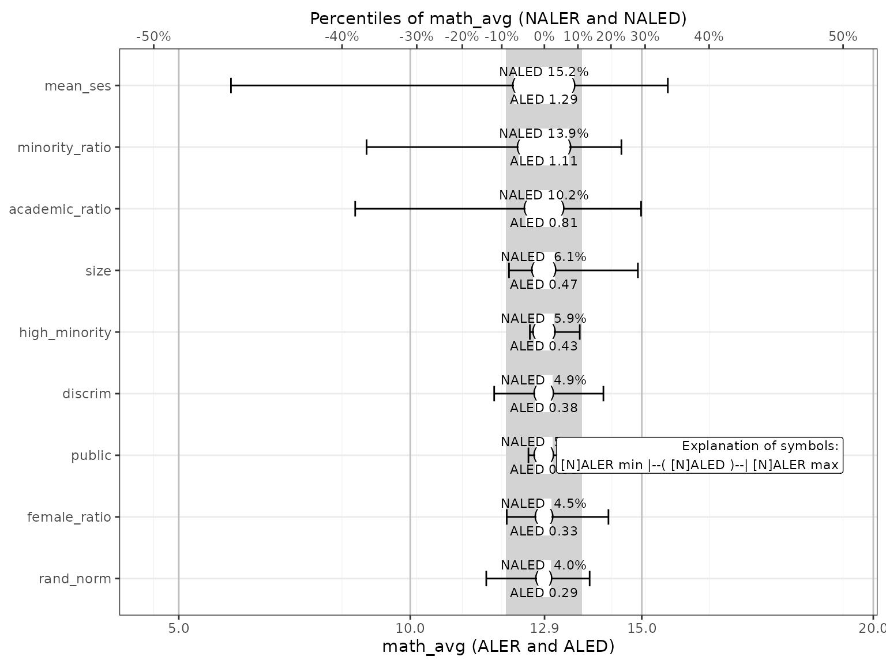
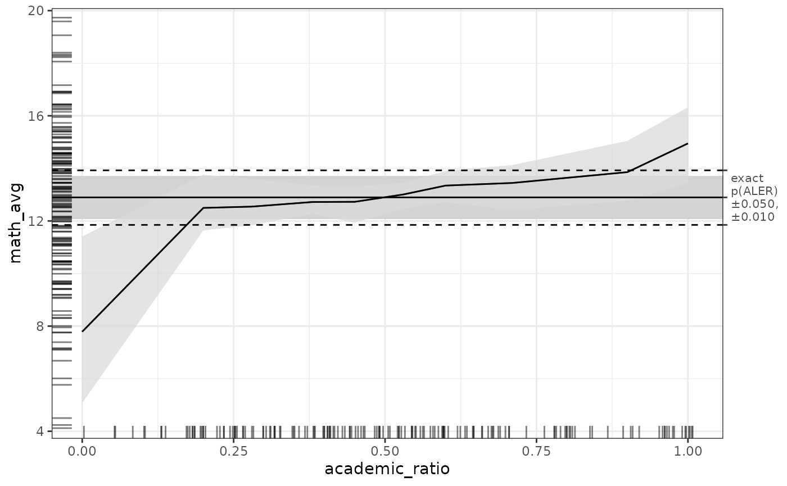

ALE-based statistics for statistical inference and effect sizes
Chitu Okoli
April 9, 2025
Source:vignettes/ale-statistics.Rmd
ale-statistics.RmdAccumulated local effects (ALE) was developed by Daniel Apley and
Jingyu Zhu doi:10.1111/rssb.12377 as a global explanation approach
for interpretable machine learning (IML). However, the ale package aims to extend it for
statistical inference, among other extensions. This vignette introduces
the extensions of ALE for statistical inference. In particular, we
present some effect size measures specific to ALE. We introduce these
statistics in detail in a working paper: Okoli, Chitu. 2023.
“Statistical Inference Using Machine Learning and Classical Techniques
Based on Accumulated Local Effects (ALE).” arXiv. doi:10.48550/arXiv.2310.09877. Please note that they
might be further refined after peer review.
We begin by loading the necessary libraries.
library(mgcv) # for datasets and the gam function
#> Loading required package: nlme
#> This is mgcv 1.9-1. For overview type 'help("mgcv-package")'.
library(dplyr) # for data manipulation
#>
#> Attaching package: 'dplyr'
#> The following object is masked from 'package:nlme':
#>
#> collapse
#> The following objects are masked from 'package:stats':
#>
#> filter, lag
#> The following objects are masked from 'package:base':
#>
#> intersect, setdiff, setequal, union
library(ale)
#>
#> Attaching package: 'ale'
#> The following object is masked from 'package:base':
#>
#> getExample dataset
We will demonstrate ALE statistics using a dataset composed and
transformed from the mgcv package. This package is required
to create the generalized additive model (GAM) that we will use for this
demonstration. (Strictly speaking, the source datasets are in the
nlme package, which is loaded automatically when we load
the mgcv package.) Here is the code to generate the data
that we will work with:
# Create and prepare the data
# Specific seed chosen to illustrate the spuriousness of the random variable
set.seed(6)
math <-
# Start with math achievement scores per student
MathAchieve |>
as_tibble() |>
mutate(
school = School |> as.character() |> as.integer(),
minority = Minority == 'Yes',
female = Sex == 'Female'
) |>
# summarize the scores to give per-school values
summarize(
.by = school,
minority_ratio = mean(minority),
female_ratio = mean(female),
math_avg = mean(MathAch),
) |>
# merge the summarized student data with the school data
inner_join(
MathAchSchool |>
mutate(school = School |> as.character() |> as.integer()),
by = c('school' = 'school')
) |>
mutate(
public = Sector == 'Public',
high_minority = HIMINTY == 1,
) |>
select(-School, -Sector, -HIMINTY) |>
rename(
size = Size,
academic_ratio = PRACAD,
discrim = DISCLIM,
mean_ses = MEANSES,
) |>
# Remove ID column for analysis
select(-school) |>
select(
math_avg, size, public, academic_ratio,
female_ratio, mean_ses, minority_ratio, high_minority, discrim,
everything()
) |>
mutate(
rand_norm = rnorm(nrow(MathAchSchool))
)
glimpse(math)
#> Rows: 160
#> Columns: 10
#> $ math_avg <dbl> 9.715447, 13.510800, 7.635958, 16.255500, 13.177687, 11…
#> $ size <dbl> 842, 1855, 1719, 716, 455, 1430, 2400, 899, 185, 1672, …
#> $ public <lgl> TRUE, TRUE, TRUE, FALSE, FALSE, TRUE, TRUE, FALSE, FALS…
#> $ academic_ratio <dbl> 0.35, 0.27, 0.32, 0.96, 0.95, 0.25, 0.50, 0.96, 1.00, 0…
#> $ female_ratio <dbl> 0.5957447, 0.4400000, 0.6458333, 0.0000000, 1.0000000, …
#> $ mean_ses <dbl> -0.428, 0.128, -0.420, 0.534, 0.351, -0.014, -0.007, 0.…
#> $ minority_ratio <dbl> 0.08510638, 0.12000000, 0.97916667, 0.40000000, 0.72916…
#> $ high_minority <lgl> FALSE, FALSE, TRUE, FALSE, TRUE, FALSE, FALSE, FALSE, F…
#> $ discrim <dbl> 1.597, 0.174, -0.137, -0.622, -1.694, 1.535, 2.016, -0.…
#> $ rand_norm <dbl> 0.26960598, -0.62998541, 0.86865983, 1.72719552, 0.0241…The structure has 160 rows, each of which refers to a school whose
students have taken a mathematics achievement test. We describe the data
here based on documentation from the nlme package but some
details are not quite clear:
| variable | format | description |
|---|---|---|
| math_avg | double | average mathematics achievement scores of all students in the school |
| size | double | the number of students in the school |
| public | logical | TRUE if the school is in the public sector; FALSE if in the Catholic sector |
| academic_ratio | double | the percentage of students on the academic track |
| female_ratio | double | percentage of students in the school that are female |
| mean_ses | double | mean socioeconomic status for the students in the school (measurement is not quite clear) |
| minority_ratio | double | percentage of students that are members of a minority racial group |
| high_minority | logical | TRUE if the school has a high ratio of students of minority racial groups (unclear, but perhaps relative to the location of the school) |
| discrim | double | the “discrimination climate” (perhaps an indication of extent of racial discrimination in the school?) |
| rand_norm | double | a completely random variable |
Of particular note is the variable rand_norm. We have
added this completely random variable (with a normal distribution) to
demonstrate what randomness looks like in our analysis. (However, we
selected the specific random seed of 6 because it highlights some
particularly interesting points.)
The outcome variable that is the focus of our analysis is
math_avg, the average mathematics achievement scores of all
students in each school. Here are its descriptive statistics:
summary(math$math_avg)
#> Min. 1st Qu. Median Mean 3rd Qu. Max.
#> 4.24 10.47 12.90 12.62 14.65 19.72Full model bootstrap
Now we create a model and compute statistics on it. Because this is a
relatively small dataset, we will
carry out full model bootstrapping with a ModelBoot
object.
First, we create a generalized additive model (GAM) so that we can capture non-linear relationships in the data.
gam_math <- gam(
math_avg ~ public + high_minority +
s(size) + s(academic_ratio) + s(female_ratio) + s(mean_ses) +
s(minority_ratio) + s(discrim) + s(rand_norm),
data = math
)
gam_math
#>
#> Family: gaussian
#> Link function: identity
#>
#> Formula:
#> math_avg ~ public + high_minority + s(size) + s(academic_ratio) +
#> s(female_ratio) + s(mean_ses) + s(minority_ratio) + s(discrim) +
#> s(rand_norm)
#>
#> Estimated degrees of freedom:
#> 1.00 6.34 2.74 8.66 5.27 1.00 1.38
#> total = 29.39
#>
#> GCV score: 2.158011Create p-value distribution objects
Before we bootstrap the model to create ALE and other data, there is an important preliminary step when our goal is to analyze ALE statistics. As with any statistics calculated on a dataset, there is some randomness to the statistic values that the procedure will give us. To quantify this randomness, we want to obtain p-values for these statistics. P-values for most standard statistics are based on the assumption that these statistics fit some distribution or another (e.g., Student’s t, , etc.). With these distributional assumptions, p-values can be calculated very quickly. However, a key characteristic of ALE is that there are no distributional assumptions: ALE data is a description of a model’s characterization of the data given to it. Accordingly, ALE statistics do not assume any distribution, either.
The implication of this for p-values is that the distribution of the data must be discovered by simulation rather than calculated based on distributional assumptions. The procedure for calculating p-values is the following:
- A random variable is added to the dataset.
- The model is retrained with all variables including this new random variable.
- ALE statistics are calculated for the random variable.
- This procedure is repeated 1,000 times or so to get 1,000 ALE statistic values from the 1,000 random variables.
- p-values are calculated based on the frequency of times that the random variables obtain specific statistic values.
As you can imagine, this procedure is very slow: it involves
retraining the entire model on the full dataset 1,000 times. The
ale package speeds of the process significantly through
parallel processing (implemented by default), but it still involves the
speed of retraining the model hundreds of times.
To avoid having to repeat this procedure several times (as would be
the case when you are doing exploratory analyses), we can create a
ALEpDist object that can be run once for a given
model-dataset pair. The ALEpDist object is used to generate
p-values based on statistics for any variable from the same
model-dataset pair. It generates these p-values when passed to the
ALE() or ModelBoot() constructors. For very
large datasets, the process of generating the ALEpDist
object could be sped up by only using a subset of the data and by
running fewer than 1,000 random iterations by setting the
rand_it argument. However, the ALEpDist()
constructor will not allow fewer than 100 iterations, otherwise the
p-values thus generated would be meaningless.)
We now demonstrate how to create the ALEpDist object for
our case.
# # To generate the code, uncomment the following lines.
# # But it is slow because it retrains the model 1000 times, so this vignette loads a pre-created ALEpDist object.
# # For standard models like mgcv::gam that store their data,
# # there is no need to specify the data argument.
# gam_math_p_dist <- ALEpDist(gam_math)
# saveRDS(gam_math_p_dist, file.choose())
gam_math_p_dist <- url('https://github.com/tripartio/ale/raw/main/download/gam_math_p_dist.0.5.0.rds') |>
readRDS()We can now proceed to bootstrap the model for ALE analysis.
Bootstrap the model with p-values
By default, a ModelBoot object runs 100 bootstrap
iterations; this can be controlled with the boot_it
argument. Bootstrapping is usually rather slow, even on small datasets,
since the entire process is repeated that many times. The
ModelBoot() constructor speeds up the process significantly
through parallel processing (implemented by default), but it still
involves retraining the entire model dozens of times. The default of 100
should be sufficiently stable for model building, when you would want to
run the bootstrapped algorithm several times and you do not want it to
be too slow each time. For definitive conclusions, you could run 1,000
bootstraps or more to confirm the results of 100 bootstraps.
# # To generate the code, uncomment the following lines.
# # But bootstrapping is slow because it retrains the model, so this vignette loads a pre-created ale_boot object.
# mb_gam_math <- ModelBoot(
# gam_math,
# # Pass the ALEpDist object so that p-values will be generated
# ale_p = gam_math_p_dist,
# # For the GAM model coefficients, show details of all variables, parametric or not
# tidy_options = list(parametric = TRUE),
# # tidy_options = list(parametric = NULL),
# boot_it = 100 # default
# )
# saveRDS(mb_gam_math, file.choose())
mb_gam_math <- url('https://github.com/tripartio/ale/raw/main/download/mb_gam_math_stats_vignette.0.5.0.rds') |>
readRDS()We can see the bootstrapped values of various overall model
statistics by printing the model_stats property of the
model bootstrap object:
mb_gam_math@model_stats
#> # A tibble: 9 × 7
#> name boot_valid conf.low median mean conf.high sd
#> <chr> <dbl> <dbl> <dbl> <dbl> <dbl> <dbl>
#> 1 df NA 29.5 42.3 42.6 58.0 7.78
#> 2 df.residual NA 102. 118. 117. 131. 7.78
#> 3 nobs NA 160 160 160 160 0
#> 4 adj.r.squared NA 0.844 0.896 0.895 0.938 0.0249
#> 5 npar NA 66 66 66 66 0
#> 6 mae 1.35 1.25 NA NA 2.13 0.211
#> 7 sa_mae 0.726 0.541 NA NA 0.754 0.0512
#> 8 rmse 1.71 1.58 NA NA 2.77 0.294
#> 9 sa_rmse 0.724 0.574 NA NA 0.748 0.0528The names of the columns follow the broom package
conventions:
-
nameis the specific overall model statistic described in the row. -
boot_validis the bootstrap-validated value of the performance metric specified in thenamecolumn. This is available only for machine-learning–style performance metrics like MAE and AUC; they are validated with (bootstrap validation with the .632 correction)[https://www.jstor.org/stable/2288636]. -
conf.lowandconf.highare the lower and upper confidence intervals respectively.ModelBootdefaults to a 95% confidence interval; this can be changed by setting theboot_alphaargument of its constructor (the default is 0.05 for a 95% confidence interval). -
medianandmeanare the average bootstrapped estimates of the statistic. They are not relevant for bootstrap-validated metrics because those values are calculated with the .632 correction. -
sdis the standard deviation of the bootstrapped estimate.
Our focus, however, in this vignette is on the effects of individual
variables. These are available in the model_coefs element
of the model bootstrap object:
mb_gam_math@model_coefs
#> # A tibble: 3 × 6
#> term conf.low median mean conf.high std.error
#> <chr> <dbl> <dbl> <dbl> <dbl> <dbl>
#> 1 (Intercept) 11.7 12.7 12.7 13.6 0.484
#> 2 publicTRUE -2.02 -0.652 -0.689 0.415 0.637
#> 3 high_minorityTRUE -0.318 1.05 1.03 2.32 0.676In this vignette, we cannot go into the details of how GAM models
work (you can learn more with Noam Ross’s excellent tutorial). However,
for our model illustration here, the estimates for the parametric
variables (the non-numeric ones in our model) are interpreted as regular
statistical regression coefficients whereas the estimates for the
non-parametric smoothed variables (those whose variable names are
encapsulated by the smooth s() function) are actually
estimates for expected degrees of freedom (EDF in GAM). The smooth
function s() lets GAM model these numeric variables as
flexible curves that might fit the data better than a straight line. The
estimate values for the smooth variables above are not so
straightforward to interpret, but suffice it to say that they are
completely different from regular regression coefficients.
The ale package uses bootstrap-based confidence
intervals, not p-values that assume predetermined distributions, to
determine statistical significance. Although they are not quite as
simple to interpret as counting the number of stars next to a p-value,
they are not that complicated, either. Based on the default 95%
confidence intervals, a coefficient is statistically significant if
conf.low and conf.high are both positive or
both negative. We can filter the results on this criterion:
mb_gam_math@model_coefs |>
# filter is TRUE if conf.low and conf.high are both positive or both negative because
# multiplying two numbers of the same sign results in a positive number.
filter((conf.low * conf.high) > 0)
#> # A tibble: 1 × 6
#> term conf.low median mean conf.high std.error
#> <chr> <dbl> <dbl> <dbl> <dbl> <dbl>
#> 1 (Intercept) 11.7 12.7 12.7 13.6 0.484The statistical significance of the estimate (EDF) of
the smooth terms is meaningless here because EDF cannot go below 1.0.
Thus, even the random term s(rand_norm) appears to be
“statistically significant”. Only the values for the non-smooth
(parametric terms) public and high_minority
should be considered here. So, we find that neither of the coefficient
estimates of public nor of high_minority has
an effect that is statistically significantly different from zero. (The
intercept is not conceptually meaningful here; it is a statistical
artifact.)
This initial analysis highlights two limitations of classical hypothesis-testing analysis. First, it might work suitably well when we use models that have traditional linear regression coefficients. But once we use more advanced models like GAM that flexibly fit the data, we cannot interpret coefficients meaningfully and so it is not so clear how to reach inferential conclusions. Second, a basic challenge with models that are based on the general linear model (including GAM and almost all other statistical analyses) is that their coefficient significance compares the estimates with the null hypothesis that there is no effect. However, even if there is an effect, it might not be practically meaningful. As we will see, ALE-based statistics are explicitly tailored to emphasize practical implications beyond the notion of mere “statistical significance”.
ALE effect size measures
ALE was developed to graphically display the relationship between predictor variables in a model and the outcome regardless of the nature of the model. Thus, before we proceed to describe our extension of effect size measures based on ALE, let us first briefly examine the ALE plots for each variable.
ALE plots with p-values
We can see that most variables seem to have some sort of mean effect across various values. However, for statistical inference, our focus must be on the bootstrap intervals. Crucial to our interpretation is the middle grey band that indicates the median ± 5% of random values. Below, we will explain what exactly the ALE range (ALER) means, but for now, we can say this:
- The approximate middle of the grey band is the median of the
y outcome variables in the dataset (
math_avg, in our case). The middle tick on the right y-axis indicates the exact median. (If you prefer, theplot()function lets you centre the data on the mean or on zero with theale_centreargument.) - We call this grey band the “ALER band”. 95% of random variables had ALE values that fully lay within the ALER band.
- The dashed lines above and below the ALER band expand the boundaries to where 99% of the random variables were constrained. These boundaries could be considered as demarcating an extended or outer ALER band.
The idea is that if the ALE values of any predictor variable falls
fully within the ALER band, then it has no greater effect than 95% of
purely random variables. Moreover, to consider any effect in the ALE
plot to be statistically significant (that is, non-random), there should
be no overlap between the bootstrapped confidence regions of a predictor
variable and the ALER band. (For the threshold p-values, We use the
conventional defaults of 0.05 for 95% confidence and 0.01 for 99%
confidence, but the value can be changed with the
aler_alpha argument.)
For the categorical variables (public and
high_minority above), the confidence interval bars for all
categories overlap the ALER band. The confidence interval bars indicate
two useful pieces of information to us. When we compare them to the ALER
band, their overlap or lack thereof tells us about the practical
significance of the category. When we compare the confidence bars of one
category with those of others, it allows us to assess if the category
has a statistically significant effect that is different from that of
the other categories; this is equivalent to the regular interpretation
of coefficients for GAM and other GLM models. In both cases, the
confidence interval bars of the TRUE and FALSE categories overlap each
other, indicating that there is no statistically significant difference
between categories. In addition, each confidence interval band overlaps
the ALER band, indicating that none of the effects is meaningfully
different from random results, either.
For numeric variables, the confidence regions overlap the ALER band
for most of the domains of the predictor variables except for some
regions that we examine below. The extreme points of each variable
(except for discrim and female_ratio) are
usually either slightly below or slightly above the ALER band,
indicating that extreme values have the most extreme effects: math
achievement increases with increasing school size, academic track ratio,
and mean socioeconomic status, whereas it decreases with increasing
minority ratio. The ratio of females and the discrimination climate both
overlap the ALER band for the entirety of their domains, so the data do
not support any apparent trends.
Of particular interest is the random variable rand_norm,
whose average ALE appears to show some sort of pattern. However, we note
that the 95% confidence intervals we use mean that if we were to retry
the analysis for 100 different random seeds, we would expect around five
of the random variables to partially escape the bounds of the ALER band.
We will return below to the implications of random variables in ALE
analysis.
ALE plots without p-values
Before we continue, let us take a brief detour to see what we get if
we create a ModelBoot object without giving it a
ALEpDist object. This might be because we forget to do so,
or because we want to see quick results without the slow process of
first generating a ALEpDist object. Let us create another
ModelBoot object, but this time, one without p-values.
# # To generate the code, uncomment the following lines.
# # But bootstrapping is slow because it retrains the model, so this vignette loads a pre-created ale_boot object.
# mb_gam_no_p <- ModelBoot(
# gam_math,
# ale_p = NULL, # disable ALE p-values
# # For the GAM model coefficients, show details of all variables, parametric or not
# tidy_options = list(parametric = TRUE),
# # tidy_options = list(parametric = NULL),
# boot_it = 40 # 100 by default but reduced here for a faster demonstration
# )
# saveRDS(mb_gam_no_p, file.choose())
mb_gam_no_p <- url('https://github.com/tripartio/ale/raw/main/download/mb_gam_no_p_stats_vignette.0.5.0.rds') |>
readRDS()
plot(mb_gam_no_p) |>
print(ncol = 2)In the absence of p-values, the ale packages uses
simpler visualizations to offer meaningful results. There is no ALER
band; there are simply reference lines that indicate the interquartile
range of the outcome values, that is, the 25th and 75th percentiles,
with the median in between. While these references do not give us a
precise measure of the strength of effects, they do give a general,
intuitive indication.
For most of the rest of this article, we will only analyze the results with ALER bands generated from p-values, though we will briefly revisit ALE plots without p-values.
ALE effect size measures on the scale of the y outcome variable
Although ALE plots allow rapid and intuitive conclusions for
statistical inference, it is often helpful to have summary numbers that
quantify the average strengths of the effects of a variable. Thus, we
have developed a collection of effect size measures based on ALE
tailored for intuitive interpretation. To understand the intuition
underlying the various ALE effect size measures, it is useful to first
examine the ALE effects plot, which graphically
summarizes the effect sizes of all the variables in the ALE analysis.
This is generated with the get() method on an
ALEPlots object with type = 'effect':
get(mb_gam_plots, type = 'effect')
This plot is unusual, so it requires some explanation:
- The y- (vertical) axis displays the x variables, rather than the x-axis. This is consistent with most effect size plots because they list the full names of variables. It is more readable to list them as labels on the y-axis than the other way around.
- The x- (horizontal) axis thus displays the y (outcome) variable. But there are two representations of this same axis, one at the bottom and one at the top.
- On the bottom is a more typical axis of the outcome variable, in our
case,
math_avg. It is scaled as expected. In our case, the axis breaks by default to four to six units each from 5 to 20, evenly spaced. - On the top, the outcome variable is expressed as percentiles ranging from -50‰ below the median (the minimum outcome value in the dataset) to +50‰ above the median (the maximum). It is divided into 10 deciles of 10‰ each. Because percentiles are usually not evenly distributed in a dataset, the decile breaks are not evenly spaced.
- Thus, this plot has two x-axes, the lower one in units of the outcome variable and the upper one in percentiles of the outcome variable. To reduce the confusion, the major vertical gridlines that are slightly darker align with the units of the outcome (lower axis) and the minor vertical gridlines that are slightly lighter align with the percentiles (upper axis).
- The vertical grey band in the middle is the NALED band. Its width is the 0.05 p-value of the NALED (explained below). That is, 95% of random variables had a NALED equal or smaller than that width.
- The variables on the horizontal axis are sorted by decreasing ALED and then NALED value (explained below).
Although it is somewhat confusing to have two axes, the percentiles are a direct transformation of the raw outcome values. The first two base ALE effect size measures below are in units of the outcome variable while their normalized versions are in percentiles of the outcome. Thus, the same plot can display the two kinds of measures simultaneously. Referring to this plot can help understand each of the measures, which we proceed to explain in detail.
Before we explain these measures in detail, we must reiterate the timeless reminder that correlation is not causation. So, none of the scores necessarily means that an x variable or “predictor” causes a certain effect on the y outcome; we can only say that the ALE effect size measures indicate associated or related variations between the two variables.
ALE range (ALER)
The easiest ALE statistic to understand is the ALE range (ALER), so
we begin there. It is simply the range from the minimum to the maximum
of any ale_y value for that variable. Mathematically, that
is
where
is the vector of ALE y values for a variable.
All the ALE effect size measures are centred on zero so that they are consistent regardless of if the user chooses to centre their plots on zero, the median, or the mean. Specifically,
-
aler_min: minimum of anyale_yvalue for the variable. -
aler_max: maximum of anyale_yvalue for the variable.
ALER shows the extreme values of a variable’s effect on the outcome.
In the effects plot above, it is indicated by the extreme ends of the
horizontal bars for each variable. We can access ALE effect size
measures through the ale$stats element of the bootstrap
result object, with multiple views. To focus on all the measures for a
specific variable, we can access the ale$stats$by_term
element.
Let’s focus on public. Here is its ALE plot:
get(mb_gam_plots, 'public')Here are the effect size measures for the categorical
public:
get(mb_gam_math, 'public', stats = 'all')
#> # A tibble: 6 × 7
#> term statistic estimate conf.low median mean conf.high
#> <fct> <fct> <dbl> <dbl> <dbl> <dbl> <dbl>
#> 1 public aled 0.375 0.0184 0.332 0.375 0.968
#> 2 public aler_min -0.344 -0.846 -0.320 -0.344 -0.0201
#> 3 public aler_max 0.421 0.0174 0.369 0.421 1.20
#> 4 public naled 5.03 0 4.72 5.03 11.7
#> 5 public naler_min -4.26 -11.2 -3.41 -4.26 0
#> 6 public naler_max 6.07 0 5.62 6.07 17.8We see there that public has an ALER of [-0.34, 0.42].
When we consider that the median math score in the dataset is 12.9, this
ALER indicates that the minimum of any ALE y value for
public (when public == TRUE) is -0.34 below
the median. This is shown at the 12.6 mark in the plot above. The
maximum (public == FALSE) is 0.42 above the median, shown
at the 13.3 point above.
The unit for ALER is the same unit as the outcome variable; in our
case, that is math_avg ranging from 2 to 20. No matter what
the average ALE values might be, the ALER quickly shows the minimum and
maximum effects of any value of the x variable on the
y variable.
For contrast, let us look at a numeric variable,
academic_ratio:
get(mb_gam_plots, 'academic_ratio')
Here are its ALE effect size measures:
get(mb_gam_math, 'academic_ratio', stats = 'all')
#> # A tibble: 6 × 7
#> term statistic estimate conf.low median mean conf.high
#> <fct> <fct> <dbl> <dbl> <dbl> <dbl> <dbl>
#> 1 academic_ratio aled 0.810 0.408 0.795 0.810 1.29
#> 2 academic_ratio aler_min -4.09 -7.78 -4.41 -4.09 -0.568
#> 3 academic_ratio aler_max 2.09 0.895 2.08 2.09 3.43
#> 4 academic_ratio naled 10.2 4.39 10.2 10.2 15.9
#> 5 academic_ratio naler_min -33.3 -48.1 -38.8 -33.3 -5.23
#> 6 academic_ratio naler_max 28.1 11.7 27.7 28.1 42.3The ALER for academic_ratio is considerably broader with
-4.09 below and 2.09 above the median.
ALE deviation (ALED)
While the ALE range shows the most extreme effects a variable might have on the outcome, the ALE deviation indicates its average effect over its full domain of values. Based on the zero-centred ALE values, ALED is conceptually similar to the weighted mean absolute error (MAE) of the ALE y values. Mathematically, it is
where is the index of ALE x intervals for the variable (for a categorical variable, this is the number of distinct categories), is the ALE y value for the th ALE x interval, and is the number of rows in the th ALE x interval.
However, whereas this equation describes ALED for non-numeric values
where each ALE x interval is a distinct x value with a
corresponding ALE y value, it requires some adjustment for
numeric x values where .ceil represents the upper
bound of each bin. Thus, for numeric values, two adjustments are needed.
First, to convert the .ceil boundaries into proper discrete
bins, the number of rows (.n) in the first element
(representing the minimum) is added to the second element. Second,
rather than the .y values at the bin boundaries,
.y for each bin is recalculated as the midpoint between
consecutive .ceil boundaries. The adjusted ALED formula for
numeric x variables is given in the following equation:
where:
is the adjusted number of rows for the th interval, with the first element adjusted to include the number of rows from the minimum interval.
represents the recalculated ALE value for each bin, taken as the midpoint between consecutive values.
Based on its ALED, we can say that the average effect on math scores
of whether a school is in the public or Catholic sector is 0.38 (again,
out of a range from 2 to 20). In the effects plot above, the ALED is
indicated by a white box bounded by parentheses ( and
). As it is centred on the median, we can readily see that
the average effect of school sector barely exceeds the limits of the
ALER band, indicating that it barely exceeds our threshold of practical
relevance. The average effect for ratio of academic track students is
slightly higher at 0.81. We can see on the plot that it slightly exceeds
the ALER band on both sides, indicating its slightly stronger effect. We
will comment on the values of other variables when we discuss the
normalized versions of these scores, to which we proceed next.
Normalized ALE effect size measures
Since ALER and ALED scores are scaled on the range of y for a given dataset, these scores cannot be compared across datasets. Thus, we present normalized versions of each with intuitive, comparable values. For intuitive interpretation, we normalize the scores on the minimum, median, and maximum of any dataset. In principle, we divide the zero-centred y values in a dataset into two halves: the lower half from the 0th to the 50th percentile (the median) and the upper half from the 50th to the 100th percentile. (Note that the median is included in both halves). With zero-centred ALE y values, all negative and zero values are converted to their percentile score relative to the lower half of the original y values while all positive ALE y values are converted to their percentile score relative to the upper half. (Technically, this percentile assignment is called the empirical cumulative distribution function (ECDF) of each half.) Each half is then divided by two to scale them from 0 to 50 so that together they can represent 100 percentiles. (Note: when a centred ALE y value of exactly 0 occurs, we choose to include the score of zero ALE y in the lower half because it is analogous to the 50th percentile of all values, which more intuitively belongs in the lower half of 100 percentiles.) The transformed maximum ALE y is then scaled as a percentile from 0 to 100%.
There is a notable complication. This normalization smoothly distributes ALE y values when there are many distinct values, but when there are only a few distinct ALE y values, then even a minimal ALE y deviation can have a relatively large percentile difference. If any ALE y value is less than the difference between the median in the data and the value either immediately below or above the median, we consider that it has virtually no effect. Thus, the normalization sets such minimal ALE y values as zero.
Its formula is:
where -
is the vector of y values centred on the median (that is,
the median is subtracted from all values). -
is the ECDF of the non-negative values in y. -
is the ECDF of the negative values in y after they have
been inverted (multiplied by -1).
Of course, the formula could be simplified by multiplying by 50 instead of by 100 and not dividing the ECDFs by two each. But we prefer the form we have given because it is explicit that each ECDF represents only half the percentile range and that the result is scored to 100 percentiles.
Normalized ALER (NALER)
Based on this normalization, we first have the normalized ALER (NALER), which scales the minimum and maximum ALE y values from -50% to +50%, centred on 0%, which represents the median:
where is the full vector of y values in the original dataset, required to calculate .
ALER shows the extreme values of a variable’s effect on the outcome.
In the effects plot above, it is indicated by the extreme ends of the
horizontal bars for each variable. We see there that public
has an ALER of -0.34, 0.42. When we consider that the median math score
in the dataset is 12.9, this ALER indicates that the minimum of any ALE
y value for public (when
public == TRUE) is -0.34 below the median. This is shown at
the 12.6 mark in the plot above. The maximum
(public == FALSE) is 0.42 above the median, shown at the
13.3 point above. The ALER for academic_ratio is
considerably broader with -4.09 below and 2.09 above the median.
The result of this transformation is that NALER values can be interpreted as percentile effects of y below or above the median, which is centred at 0%. Their numbers represent the limits of the effect of the x variable with units in percentile scores of y. In the effects plot above, because the percentile scale on the top corresponds exactly to the raw scale below, the NALER limits are represented by exactly the same points as the ALER limits; only the scale changes. The scale for ALER and ALED is the lower scale of the raw outcomes; the scale for NALER and NALED is the upper scale of percentiles.
So, with a NALER of -4.26, 6.07, the minimum of any ALE value for
public (public == TRUE) shifts math scores by
-4 percentile y points whereas the maximum
(public == FALSE) shifts math scores by 6 percentile
points. Academic track ratio has a NALER of -33.32, 28.08, ranging from
-33 to 28 percentile points of math scores.
Normalized ALED (NALED)
The normalization of ALED scores applies the same ALED formula as before but on the normalized ALE values instead of on the original ALE y values:
NALED produces a score that ranges from 0 to 100%. It is essentially the ALED expressed in percentiles, that is, the average effect of a variable over its full domain of values. So, the NALED of public school status of 5 indicates that its average effect on math scores spans the middle 5 percent of scores. Academic ratio has an average effect expressed in NALED of 10.2% of scores.
The ALER band and random variables
It is particularly striking to note the ALE effect size measures for
the random rand_norm:
get(mb_gam_plots, 'rand_norm')
get(mb_gam_math, 'rand_norm', stats = 'all')
#> # A tibble: 6 × 7
#> term statistic estimate conf.low median mean conf.high
#> <fct> <fct> <dbl> <dbl> <dbl> <dbl> <dbl>
#> 1 rand_norm aled 0.295 0.107 0.282 0.295 0.631
#> 2 rand_norm aler_min -1.26 -3.98 -1.01 -1.26 -0.180
#> 3 rand_norm aler_max 0.978 0.287 0.788 0.978 2.63
#> 4 rand_norm naled 4.00 1.31 3.65 4.00 7.93
#> 5 rand_norm naler_min -13.7 -37.5 -11.2 -13.7 -3.75
#> 6 rand_norm naler_max 13.4 2.5 11.2 13.4 35.5rand_norm has a NALED of 4. It might be surprising that
a purely random value has any “effect size” to speak of but
statistically, it must have some numeric value or the other. In informal
tests with several different random seeds, the random variables on this
dataset did not exceed a threshold of 5%. So, if we do not have
p-values, the NALED is particularly helpful in comparing the practical
relevance of variables. As a rule of thumb, we suggest that a variable
needs to shift the outcome on average by at least 5% of the median
values to be considered meaningful. This threshold is the same scale as
the NALED. So, we can tell that public school status with its NALED of 5
just barely crosses our threshold.
Interpretation of normalized ALE effect sizes
Here we summarize some general principles for interpreting normalized ALE effect sizes.
-
Normalized ALE deviation (NALED): this is the
average variation of ALE effect of the input variable.
- Values range from 0 to 100%:
- 0% means no effect at all.
- 100% means the maximum possible effect any variable could have: for a binary variable, one value (50% of the data) sets the outcome at its minimum value and the other value (the other 50% of the data) sets the outcome at its maximum value.
- Larger NALED means stronger effects.
- Values range from 0 to 100%:
-
Normalized ALE range (NALER): these are the minimum
and maximum effects of any value of the input variable.
- NALER minimum ranges from –50% to 0%; NALER maximum ranges from 0% to +50%:
- 0% means no effect at all. It indicates that the only effect of the input variable is to keep the outcome at the median of its range of values.
- NALER minimum of n means that, regardless of the effect size of NALED, the minimum effect of any input value shifts the outcome by n percentile points of the outcome range. Lower values (closer to –50%) mean a stronger extreme effect.
- NALER maximum of x means that, regardless of the effect size of NALED, the maximum effect of any input value shifts the outcome by x percentile points of the outcome range. Greater values (closer to +50%) mean a stronger extreme effect.
- However, NALER values are normalized such that even if the actual effect of a variable exceeds ±50%, its normalized value is capped at ±50%.
In general, regardless of the values of ALE statistics, we should visually inspect the ALE plots to identify and interpret patterns of relationships between inputs and the outcome. However, if NALER values are quite low (< ±5%), there is probably not much to see in the plot.
A common question for interpreting effect sizes is, “How strong does an effect need to be to be considered ‘strong’ or ‘weak’?” On one hand, we decline to offer general guidelines for how “strong” is “strong”. The simple answer is that it depends entirely on the applied context. It is not meaningful to try to propose numerical values for statistics that are supposed to be useful for all applied contexts.
On the other hand, we do consider it very important to delineate the threshold between random effects and non-random effects. It is always important to distinguish between a weak but real effect from one that is just a statistical artifact due to random chance. For that, we can offer some general guidelines based on whether or not we have p-values.
When we have p-values for ALE statistics, then the boundaries of ALER
should generally be used to determine the acceptable risk of considering
a statistic to be meaningful. Statistically significant ALE effects are
those that are less than the 0.05 p-value of ALER minimum of a random
variable and greater than the 0.05 p-value ALER maximum of a random
variable. As we explained above when introducing the ALER band, this is
precisely what the ale package does, especially in the
plots that highlight the ALER band and the confidence region tables that
use the specified ALER p-value threshold.
In the absence of p-values, we suggest that NALED can be a general guide for non-random values. In our informal tests, we find that NALED values below 5% have the same average effect as a random variable. That is, such an average effect is not reliable; it might be random. However, regardless of the average effect indicated by NALED, large NALER effects indicate that the ALE plot should be inspected to interpret the exceptional cases. This caveat is very important; unlike GLM coefficients, ALE analysis is sufficiently sensitive to detect exceptions to the overall trend. This is precisely what makes it valuable for detecting non-linear effects.
In general, if NALED < 5%, NALER minimum > –5%, and NALER maximum < +5%, the input variable has no meaningful effect. All other cases are worth inspecting the ALE plots for careful interpretation: - NALED > 5% means a meaningful average effect. - NALER minimum < –5% means that there might be at least one input value that significantly lowers the outcome values. - NALER maximum > +5% means that there might be at least one input value that significantly increases the outcome values.
Statistical inference with ALE
Although effect sizes are valuable in summarizing the global effects of each variable, they mask much nuance since each variable varies in its effect along its domain of values. Thus, ALE is particularly powerful in its ability to make fine-grained inferences of a variable’s effect depending on its specific value.
ALE data structures for categorical and numeric variables
To understand how bootstrapped ALE can be used for statistical
inference, we must understand the structure of ALE data. Let’s begin
simple with a binary variable with just two categories,
public:
get(mb_gam_math, 'public')
#> # A tibble: 2 × 7
#> public.bin .n .y .y_lo .y_mean .y_median .y_hi
#> <ord> <int> <dbl> <dbl> <dbl> <dbl> <dbl>
#> 1 FALSE 70 13.3 12.7 13.3 13.3 14.1
#> 2 TRUE 90 12.6 12.1 12.6 12.6 13.1Here is the meaning of each column of ale$data for a
categorical variable:
-
x.bin: the different categories that exist in the categorical variable. -
.n: the number of rows for that category in the dataset provided to the function. -
.y: the ALE function value calculated for that category. For bootstrapped ALE, this is the same as.y_meanby default or.y_medianif theboot_centre = 'median'argument is specified. -
.y_loand.y_hi: the lower and upper confidence intervals for the bootstrapped.yvalue.
While the ale package internally centres ALE values on
zero, the outputs such as plots and the get() method
centres the displayed values on the median of the outcome variable; this
can be changed to mean- or zero-centring with the
ale_centre argument to plot() or
get(). In our dataset, the median of all the schools’
average mathematics achievement scores is 12.9. With ALE centred on the
median, the weighted sum of ALE y values (weighted on
.n) above the median is approximately equal to the weighted
sum of those below the median. So, in the ALE plots above, when you
consider the number of instances indicated by the rug plots and category
percentages, the average weighted ALE y approximately equals
the median.
Here is the ALE data structure for a numeric variable,
academic_ratio:
get(mb_gam_math, 'academic_ratio')
#> # A tibble: 10 × 7
#> academic_ratio.ceil .n .y .y_lo .y_mean .y_median .y_hi
#> <dbl> <int> <dbl> <dbl> <dbl> <dbl> <dbl>
#> 1 0 1 7.79 5.08 7.79 7.83 11.4
#> 2 0.2 19 12.5 11.6 12.5 12.5 13.8
#> 3 0.28 16 12.5 11.8 12.5 12.5 13.6
#> 4 0.38 18 12.7 12.3 12.7 12.7 13.3
#> 5 0.45 18 12.7 11.9 12.7 12.7 13.3
#> 6 0.53 17 13.0 12.5 13.0 13.0 13.4
#> 7 0.6 18 13.3 12.7 13.3 13.2 13.9
#> 8 0.71 18 13.4 12.4 13.4 13.5 14.1
#> 9 0.9 18 13.9 12.8 13.9 13.7 15.0
#> 10 1 17 14.9 13.4 14.9 15.0 16.3The columns are the same as with a categorical variable, but instead
of x.bin, we have x.ceil since there are no
categories. To calculate ALE for numeric variables, the range of
x values is divided into bins (by default 10, customizable with
the max_num_bins argument). Because numeric variables often
have multiple values in a bin, the ALE data stores the ceilings (upper
bounds) of the bins. If the x values have fewer than 10
distinct values in the data, then each distinct value becomes its own
bin and we record its value as the ceiling of the bin. If there are more
than 10 distinct values, then the range is divided into 10 decile
groups. The first bin includes all rows with a value exactly equal to
the minimum value of that variable, thus it often has very few
elements—sometimes only one. The other columns mean the same thing as
with categorical variables: .n is the number of rows of
data in each bin and .y is the calculated ALE for the bin
whose ceiling is .ceil.
Bootstrap-based inference with ALE
In a bootstrapped ALE plot, values within the confidence intervals are statistically significant; values outside of the ALER band can be considered at least somewhat meaningful. Thus, the essence of ALE-based inference is that only when a variable has at least some effects whose confidence intervals are outside of the ALER band should it be considered conceptually meaningful.
We can see this, for example, with the plot of
mean_ses:
get(mb_gam_plots, 'mean_ses')It might not always be easy to tell from a plot which regions are
relevant, so the results of statistical significance are summarized with
the ale$conf_regions$by_term element, which can be accessed
for each variable from its by_term element:
get(mb_gam_math, 'mean_ses', stats = 'conf_regions')
#> # A tibble: 2 × 10
#> term start_x end_x x_span_pct n pct start_y end_y trend aler_band
#> <chr> <dbl> <dbl> <dbl> <int> <dbl> <dbl> <dbl> <dbl> <ord>
#> 1 mean_ses -1.19 -0.517 33.2 18 11.2 5.32 11.3 1.20 below
#> 2 mean_ses -0.335 0.831 57.8 142 88.8 12.3 15.0 0.314 overlapFor numeric variables, the confidence regions summary has one row for each consecutive sequence of x values that have the same status: all values in the region are below the ALER band, they overlap the band, or they are all above the band. Here are the summary components:
-
start_xis the first andend_xis the last x value in the sequence.start_yis the y value that corresponds tostart_xwhileend_ycorresponds toend_x. -
nis the number of data elements (rows) in the sequence;pctis the percentage of total data elements out of the total number. -
x_span_pctis the percentage of the domain of x of the sequence that has the same confidence status (aler_band). It is is expressed as a percentage of the full domain of x values so that it may be comparable across variables with different units of x. -
trendis the average slope from the point(start_x, start_y)to(end_x, end_y). Because only the start and end points are used to calculatetrend, it does not reflect any ups and downs that might occur between those two points. Since the various x values in a dataset are on different scales, the scales of the x and y values in calculating thetrendare normalized on a scale of 100 each so that the trends for all variables are directly comparable. A positivetrendmeans that, on average, y increases with x; a negativetrendmeans that, on average, y decreases with x; a zerotrendmeans that y has the same value at its start and end points–this is always the case if there is only one point in the indicated sequence. -
aler_bandis the key information here. It indicates if all the values in the sequence fromstart_xtoend_xare below, overlapping, or above the middle ALER band:- below: the higher limit of the confidence interval of ALE y
(
.y_hi) is below the lower limit of the ALER band. - above: the lower limit of the confidence interval of ALE y
(
.y_lo) is above the higher limit of the ALER band. - overlap: neither of the first two conditions holds; that is, the
confidence region from
.y_loto.y_hiat least partially overlaps the ALER band.
- below: the higher limit of the confidence interval of ALE y
(
These results tell us that, for mean_ses, from -1.19 to
-0.517, ALE is below the ALER band from 5.32 to 11.3. From -0.335 to
0.831, ALE overlaps the ALER band from 12.3 to 15.
Interestingly, most of the text of the previous paragraph was
generated automatically by an internal (unexported function)
ale:::summarize_conf_regions_1D_in_words. (Since the
function is not exported, you must use ale::: with three
colons, not just two, if you want to access it.)
get(mb_gam_math, 'mean_ses', stats = 'conf_regions') |>
ale:::summarize_conf_regions_1D_in_words()
#> [1] "From -1.19 to -0.517, ALE is below the ALER band from 5.32 to 11.3. From -0.335 to 0.831, ALE overlaps the ALER band from 12.3 to 15."While the wording is rather mechanical, it nonetheless illustrates the potential value of being able to summarize the inferentially relevant conclusions in tabular form.
Confidence region summary tables are available not only for numeric
but also for categorical variables, as we see with public.
Here is its ALE plot again:
get(mb_gam_plots, 'public')
And here is its confidence regions summary table:
get(mb_gam_math, 'public', stats = 'conf_regions')
#> # A tibble: 2 × 6
#> term x n pct y aler_band
#> <chr> <chr> <int> <dbl> <dbl> <ord>
#> 1 public FALSE 70 43.8 13.3 overlap
#> 2 public TRUE 90 56.2 12.6 overlapSince we have categories here, there is no start or end position and
there is no trend. We instead have each x category and its
single ALE y value, with the n and
pct of the respective category. We have
aler_band as before to indicate whether the indicated
category is below, overlaps with, or is above the ALER band.
Again with the help of
ale:::summarize_conf_regions_1D_in_words(), we can
summarize the results for public: for FALSE, the ALE of
13.3 overlaps the ALER band. For TRUE, the ALE of 12.6 overlaps the ALER
band.
Again, our random variable rand_norm is particularly
interesting. Here is its ALE plot:
get(mb_gam_plots, 'rand_norm')
And here is its confidence regions summary table:
get(mb_gam_math, 'rand_norm', stats = 'conf_regions')
#> # A tibble: 1 × 10
#> term start_x end_x x_span_pct n pct start_y end_y trend aler_band
#> <chr> <dbl> <dbl> <dbl> <int> <dbl> <dbl> <dbl> <dbl> <ord>
#> 1 rand_norm -2.40 2.61 100 160 100 11.7 12.5 0.0555 overlapDespite any apparent pattern (even though we deliberately selected a random seed for a particularly erratic random variable), we see that from -2.4 to 2.61, ALE overlaps the ALER band from 11.7 to 12.5.. So, despite the random highs and lows in the bootstrap confidence interval, there is no reason to suppose that the random variable has any effect anywhere in its domain.
We can conveniently summarize all the confidence regions from all
variables that are statistically significant or meaningful by accessing
the conf_regions$significant element:
get(mb_gam_math, stats = 'conf_sig')
#> # A tibble: 5 × 12
#> term x start_x end_x x_span_pct n pct y start_y end_y trend
#> <chr> <chr> <dbl> <dbl> <dbl> <int> <dbl> <dbl> <dbl> <dbl> <dbl>
#> 1 mean_… NA -1.19 -0.517 33.2 18 11.2 NA 5.32 11.3 1.20
#> 2 mean_… NA -0.335 0.831 57.8 142 88.8 NA 12.3 15.0 0.314
#> 3 minor… NA 0 0.0339 3.39 36 22.5 NA 14.5 14.2 -0.742
#> 4 minor… NA 0.0638 0.792 72.8 107 66.9 NA 13.8 11.8 -0.184
#> 5 minor… NA 1 1 0 17 10.6 NA 9.10 9.10 0
#> # ℹ 1 more variable: aler_band <ord>This summary focuses only on the x variables that have
meaningful ALE regions anywhere in their domain. We can also
conveniently isolate which variables have any such meaningful region by
extracting the unique values in the term column:
This is especially useful for analyses with dozens of variables; we can thus quickly isolate and focus on the most meaningful ones.